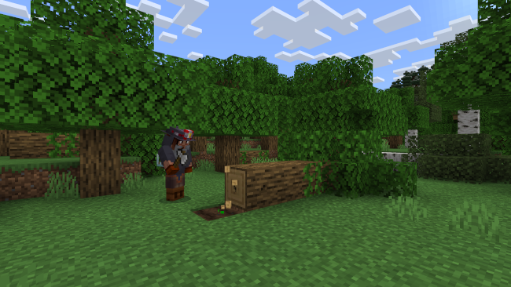
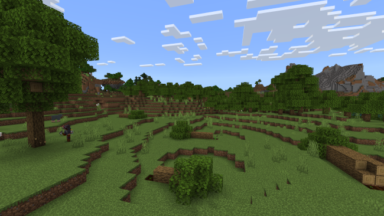
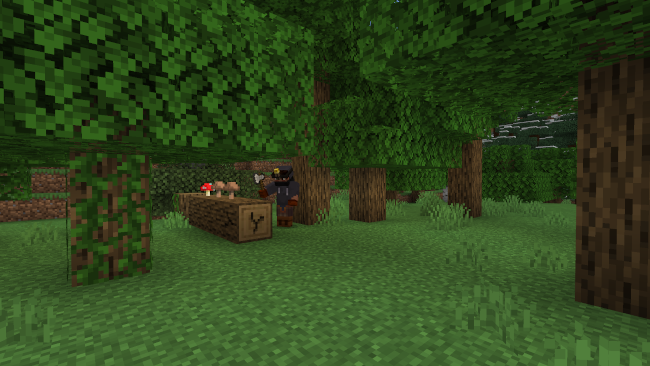
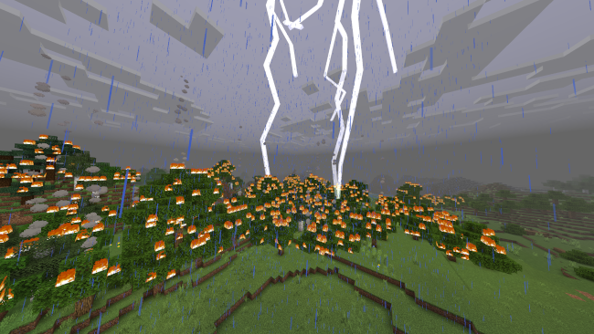

Florestas em pé, vida em equilíbrio
Escolha um tema para entender como os ecossistemas terrestres são recuperados, impactados pela exploração e ameaçados pelo fogo, segundo dados do IBAMA, MapBiomas e ICMBio.
Reflorestamento e Restauração Ecológica
O reflorestamento vai muito além do plantio isolado de árvores: trata-se de uma estratégia fundamental da ODS 15 para a recuperação da biodiversidade nativa, a recomposição de corredores ecológicos e a mitigação das mudanças climáticas globais.
Florestas secundárias e áreas restauradas atuam como essenciais sumidouros de carbono, capturando gás carbônico da atmosfera. Além disso, ecossistemas florestais saudáveis regulam o ciclo hidrológico — garantindo a recarga de aquíferos —, protegem os solos contra processos erosivos severos e evitam o assoreamento de rios e lagos continentais.
A exploração florestal e seus impactos
A extração de recursos florestais pode variar desde o manejo sustentável estrito até a supressão severa de habitat. Conheça as principais modalidades e suas distinções científicas e legais:
Manejo Florestal Sustentável (Exploração Seletiva)

Regulamentado por órgãos ambientais como o IBAMA, consiste na retirada planejada apenas de árvores adultas específicas, permitindo que a floresta mantenha sua capacidade de regeneração natural, preserve o dossel e conserve a fauna local.
Desmatamento em Larga Escala

Supressão total da vegetação nativa para conversão do solo em pastagens ou agricultura intensiva. Carrega consequências drásticas, como a fragmentação de habitats, perda irreversível de biodiversidade endêmica e degradação climática regional.
Exploração Ilegal de Madeira

Atividade clandestina realizada fora dos planos de manejo aprovados. Frequentemente associada à abertura ilegal de estradas em áreas protegidas e terras indígenas, fragiliza o ecossistema e estimula crimes ambientais correlatos.
O impacto crítico das queimadas
O fogo recorrente nos biomas brasileiros — como Cerrado, Pantanal e Amazônia — altera profundamente a dinâmica ecológica, transformando sumidouros de carbono em emissores líquidos de gases de efeito estufa.
Incêndios de Origem Natural

Desencadeados majoritariamente por descargas elétricas atmosféricas (raios) em períodos de estiagem prolongada e baixa umidade relativa do ar, comuns em ecossistemas adaptados ao fogo, embora hoje potencializados pelas mudanças climáticas.
Incêndios de Origem Antrópica (Humana)
Causados direta ou indiretamente pela ação humana, seja no uso tradicional do fogo para limpeza de pastagens que foge ao controle, ou por ações criminosas voltadas à grilagem de terras e especulação imobiliária.
O Legado Ecológico do Fogo
O pós-fogo deixa cicatrizes profundas na paisagem: mortalidade de árvores de grande porte, destruição de ninhos e tocas, interrupção de teias alimentares e aumento exponencial da vulnerabilidade da floresta a novos incêndios.